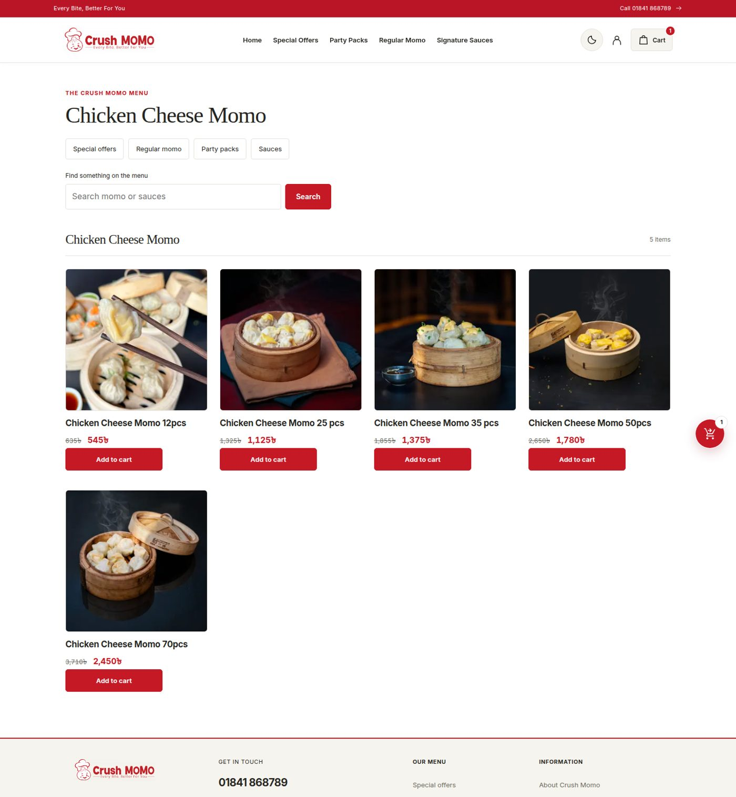

An online ordering platform designed and built by me end to end — storefront, checkout and payments, the operations backend for orders, riders, factory and CRM, and a rider Android app. A ground-up V2 rebuild is now underway for campaign-scale speed.

Crush Momo is a Dhaka momo brand whose online orders became a serious sales channel — and whose website had to keep the experience fast and consistent during campaign peaks, when a single offer can multiply traffic within an hour. I designed and built crushmomo.com end to end, and I remain responsible for the platform.
The customer side is a complete ordering platform: menu and category browsing, special offers and party packs, a cart and checkout flow with online payment through SSLCommerz alongside cash on delivery, and customer accounts for repeat orders. Behind it sits the application backend the business actually runs on — orders, rider handling, factory and CRM operations — plus a rider Android app for deliveries.
The current chapter is a ground-up V2 rebuild. The rule from the business is strict: the new platform must be indistinguishable from the live site — same design, same URLs, same products and accounts — while being rebuilt for speed under campaign spikes. That means auditing every page and flow of the live site, rebuilding the application backend route by route, and verifying the result screen by screen against the original before anything switches over.
Running the live platform day to day is the other half of the work: offers and campaigns go up without breaking the ordering flow, and the catalogue stays exactly as the kitchen sells it. The V2 rebuild also reworks details customers feel — the floating-cart upsell becomes a proper swipeable slider that never offers a product already in the cart, and checkout is matched field for field against the live site.
